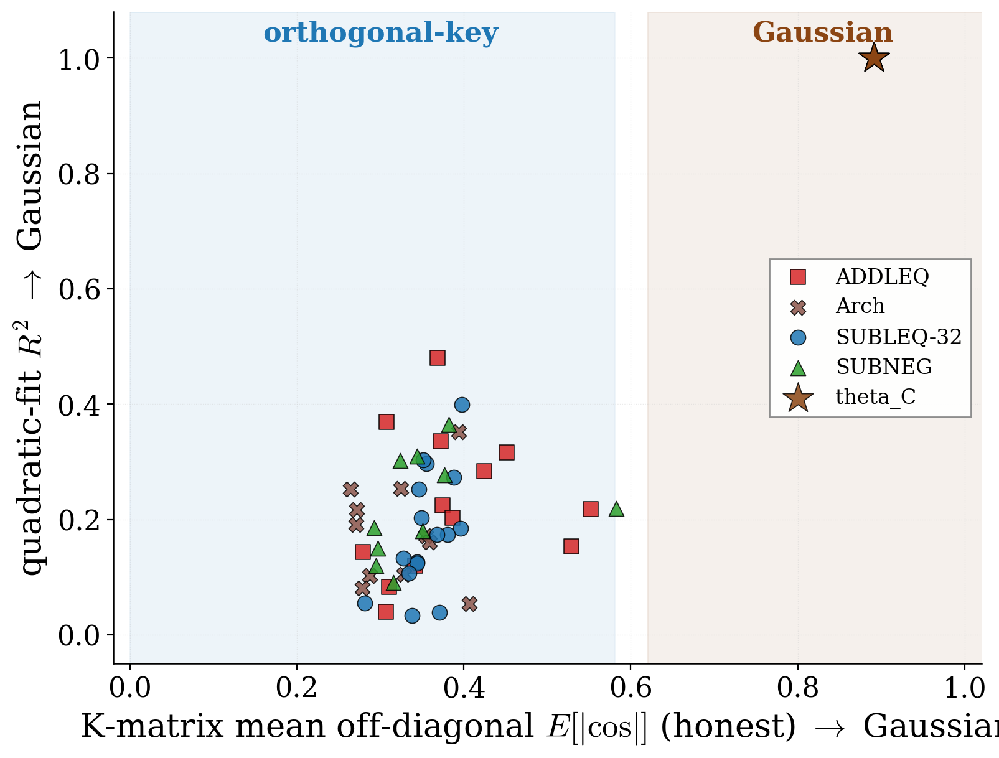
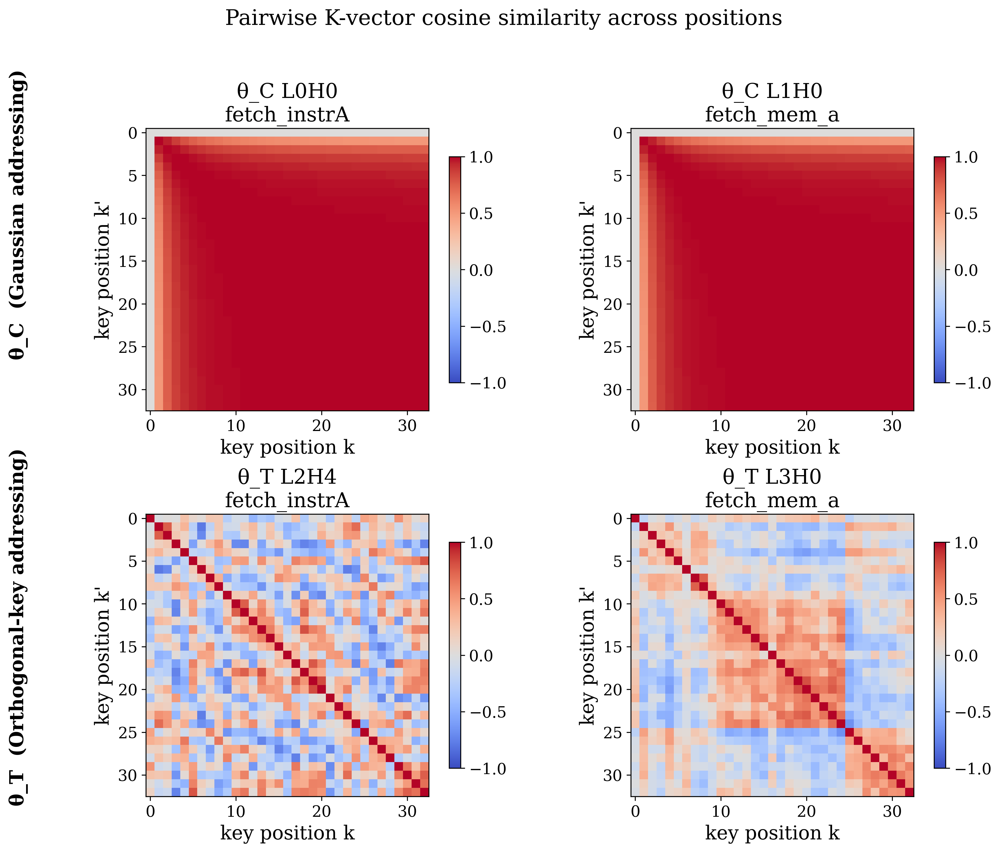
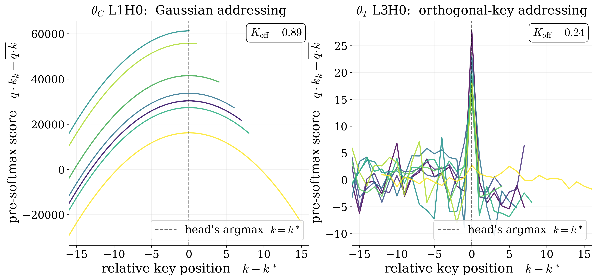
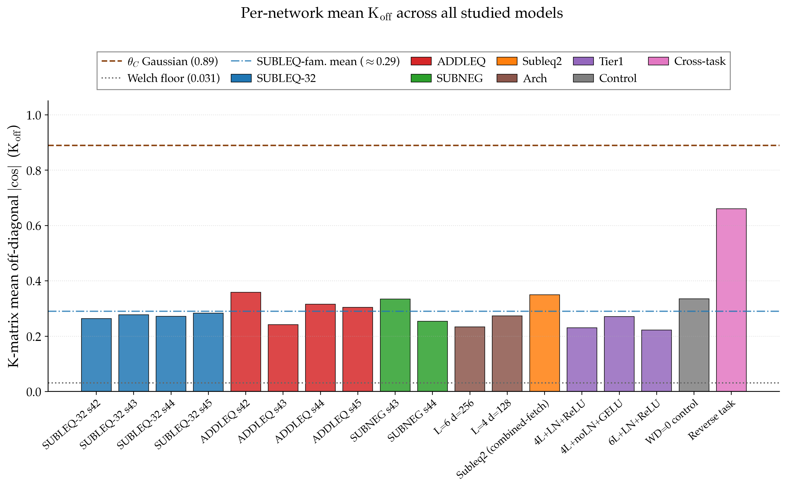

We wired a transformer, by hand, to be a computer. Then we trained a second one, from random noise, to do the exact same job. They compute the identical function — and yet, to every standard test, they look like they live in different universes. Here is why, and why it matters.
In collaboration with Microsoft Research · “Can we train a computer? Two mechanisms for content addressing in transformers.”
The paper — and the code — are available on request at anastasios@rice.edu.
This line of work was inspired by Dimitris Papailiopoulos’s essay “Can You Train a Computer?”
A transformer’s attention “points” at a memory cell by matching a query against a key. We built a small transformer whose attention and ReLUs execute a real, Turing-complete computer — about a hundred hand-set weights turn a neural network into a simple processing unit. We also just trained a transformer, from scratch, to do the same job; it succeeds, and even chains single steps into multi-step programs it never saw. So we have two networks that compute the same function. Do they work the same way? A weight-space test says “different algorithm.” A mechanistic probe says “same family.” The answer is that gradient descent found a more perpendicular internal code for pointing at memory — the same function through different-looking weights. The weight-space test mistakes that for a real disagreement, but it is the wrong tool: it calls even two separately-trained networks “different.” Looking inside is what settles it.
There is a programming language with exactly one instruction. It is called SUBLEQ — short for “subtract, and branch if less-than-or-equal to zero.” That is the whole instruction set. You give it three addresses; it subtracts the contents of one memory cell from another, writes the result back, and then, if that result came out at or below zero, it jumps somewhere else in the program. Then, repeat. It sounds far too meagre to do anything. It is, in fact, Turing-complete: with enough of these little subtract-and-branch steps you can compute anything any computer can compute. Addition, multiplication, division, square roots, loops, conditionals — all of it, out of one instruction.
That makes SUBLEQ a beautiful object for one specific experiment. The computer is simple enough to hold in your head, and you can build it out of unusual parts. Our unusual part is a transformer, the architecture behind modern language models. SUBLEQ lets us pin down an old, slippery question: when a neural network is trained to do a job we already know how to build by hand, does it end up working the same way we would have built it?
SUBLEQ = SUBtract and branch if Less-than-or-EQual to zero. One instruction, three operands \(a, b, c\): compute \(\mathrm{mem}[b] \leftarrow \mathrm{mem}[b] - \mathrm{mem}[a]\); if the result \(\le 0\), jump to instruction \(c\), otherwise continue.
It is a one-instruction set computer (OISC), and it is Turing-complete — a full processor’s worth of computation expressed with a single verb. That extreme simplicity is exactly what lets us hand-build a transformer that runs it, and check a trained one against the ground truth.
There are two different ways to get a transformer to run SUBLEQ, and the paper is about what happens when you compare them.
The first way is to wire it by hand. Following a line of work showing that transformers can be constructed to loop like little programmable machines, you choose the weights so each layer performs a piece of the subtract-and-branch: attention heads that fetch the right operands from memory, ReLU units that do the arithmetic and the comparison. Call this hand-built network \(\theta_C\) — C for constructed. It is startlingly sparse: of roughly 2.1 million weights, only about a hundred are nonzero and doing the logic; the rest are exactly zero. It runs SUBLEQ at 100% accuracy, because we told it precisely how.
The second way is to train one from scratch. Start from random noise, show it examples of single SUBLEQ steps, and let gradient descent find weights that reproduce them. Call this network \(\theta_T\) — T for trained. It, too, reaches 100% single-step accuracy. More striking: although it was only ever trained on single steps, it generalizes to whole multi-step programs it never saw executed — Fibonacci, multiplication, division, square roots — running them correctly 99.8% of the time (802 of 804 test programs), with only a couple of honest stumbles on the hardest cases.
So now we have two networks. They both run the same Turing-complete computer, perfectly. One we built; one we grew. The obvious next question — the whole reason to set this up — is whether they are secretly the same machine underneath.
How do you check whether two networks “learned the same algorithm”? The field’s default instrument is a weight-space test called mode connectivity. Line up the two networks’ weights and walk in a straight line from one to the other, watching the accuracy. If they are the same solution in slightly different clothes, every network along that path should keep working — you slide from one to the other without falling off a cliff. If accuracy collapses in the middle, they sit in different “basins,” and the usual conclusion is: different algorithms.
We ran it. Every straight-line interpolation between \(\theta_C\) and \(\theta_T\) collapses — accuracy craters partway across. By the letter of the standard test, the verdict is unambiguous: these are two different algorithms, in two different basins.
But there is a second instrument, and it says the opposite. Instead of comparing raw weights, a mechanistic probe asks what each network is doing — which attention heads fetch which operands, what each part computes. Probe both networks and a shared skeleton appears: the trained network has independently rediscovered the two pointer-dereference operations at the heart of SUBLEQ — reading \(\mathrm{mem}[a]\) and \(\mathrm{mem}[b]\) — the same content-addressing family the hand-built circuit uses. Same job, same primitives.

So which is it — same algorithm or not? Two respected tests flatly disagree, and reconciling them is the whole paper. The resolution is not to declare one test right and the other wrong. It is to notice that they are measuring different things, and to name the thing that actually differs.
Attention points at a memory cell by an overlap — a dot product between a query vector for “the cell I want” and a key vector for each position. The position whose key best matches the query wins the pointer. The two networks build those position-keys in fundamentally different ways.
The hand-built \(\theta_C\) sharpens its pointer using a smooth, quadratic-in-distance rule. The upshot is that neighbouring positions have strongly correlated keys: key 10 and key 11 look nearly identical, key 10 and key 12 a bit less, and so on, tapering off with distance. It is a Gaussian pointer — one broad, overlapping bump (the left panel of the drawing above). Useful, and exactly how a careful engineer might build it.
The trained \(\theta_T\) does something else entirely. Gradient descent hands it a set of position-keys that are nearly orthogonal — nearly perpendicular to one another. Each position gets its own almost-independent code, with little overlap between neighbours (the right panel). Both schemes point at the right cell perfectly well. They just encode “which cell” in geometrically opposite ways.
To make this measurable, we summarize each network with a single number, Koff: the average overlap between the keys of different positions. High Koff means keys are correlated (Gaussian); low means they are close to perpendicular (orthogonal). The two regimes are stark:
For scale: if the keys were completely random and unrelated, this number would sit near a floor of about 0.031. The trained networks are not at that floor — they are meaningfully above it, which is why the probe still finds real, shared structure — but they are nowhere near the hand-built circuit’s 0.89. That is the gap — a gap in the geometry of the code, not in what it computes; both point at the right cell perfectly. It is tempting to say this gap is what the weight-space interpolation misread as “a different algorithm.” It isn’t: the straight line between two separately-trained networks runs through nonsense too, even when they share the same mechanism. Interpolation collapses between almost any two distinct solutions, so its verdict was never evidence of a real difference.
Koff is the off-diagonal of the key-overlap matrix: the typical similarity between the attention keys of two different memory positions, averaged over all pairs. (The diagonal — a position with itself — is trivially perfect, so we ignore it.)
High \(K_{\text{off}}\) (\(\approx 0.89\)) ⇒ neighbouring keys strongly overlap: a broad, correlated, Gaussian pointer. Low \(K_{\text{off}}\) (\(0.20\)–\(0.53\)) ⇒ keys are near-perpendicular: sharp, near-independent, orthogonal pointing. The random-keys floor is \(\approx 0.031\). One dial, and it cleanly separates the two mechanisms.

There is a second, tidier signature of the same split. If you plot, for each attention head, the pre-softmax score as a function of how far a position is from the target, the hand-built network draws smooth parabolas — the fingerprint of its quadratic Gaussian rule. The trained network instead draws a single sharp spike at the target and near-flat noise everywhere else — the fingerprint of orthogonal keys.

A single trained network landing on orthogonal keys could be a fluke of one random seed. It is not. The orthogonal-key regime shows up again and again: across many random seeds; across four additional one-instruction-set variants (other flavours of the same subtract-and-branch idea); across five architectural perturbations of the transformer itself (LayerNorm, GELU, depth six, and so on); and in a control trained with no weight decay at all, ruling out that the effect is merely an artifact of regularization pressure. That is roughly 18 networks in total, and the finding holds throughout: hand-built lands Gaussian, trained lands orthogonal.

That last bar matters, and we want to be careful about it. When we point the same machinery at a different task — reversing a sequence — the qualitative signature transfers (the spike-like score curves reappear), but the exact Koff value moves to about 0.66. So the phenomenon — “training prefers a more orthogonal code than a careful hand-construction” — travels; the specific number \(0.20\)–\(0.53\) is SUBLEQ-family-specific, not a law of nature. Saying so is part of the result, not a hedge on it.
We are equally careful on two other fronts. The mechanistic overlap between the networks is partial, not total: \(\theta_T\) exactly reproduces the two pointer-dereference primitives, but two of its other heads attend at the third operand — the same content-addressing family, a different division of labour. And the trained network is guaranteed only on single SUBLEQ steps; its success on full multi-step programs (that 99.8%) is emergent generalization, with the occasional honest failure. We are not claiming a general-purpose computer fell out of gradient descent — the claim is narrower, and we think more interesting.
Step back and the shape of the lesson is clean. Here is a case — rare, because we hold the ground truth — where the field’s standard weight-space test for “did these two networks learn the same algorithm?” gives the wrong answer. It reports “different algorithms” — but it reports that about almost any two distinct networks, even two trained from different random seeds. A straight line drawn between two sets of trained weights passes through territory that works for neither, and the test, reading that dead zone, cries “different basins.” The collapse is real; what it means is not — it is a fact about the test, not about the networks.
The move is to resist the obvious reading. We checked it directly: shrink the hand-built circuit’s weights until the size difference is gone, and the straight line still collapses; interpolate two separately-trained networks, and it collapses just the same. The dead zone is a limitation of the test, not a fact about the networks. What settled the question was looking inside — probing the mechanism, naming Gaussian keys versus orthogonal keys, putting a number on the gap. The practical takeaway for interpretability: do not read a weight-space interpolation as a “same algorithm?” test; look inside instead. And a quieter one for anyone who trains models: given a free choice between a smooth, correlated code and a sharp, perpendicular one, gradient descent reliably reaches for the perpendicular. That preference, made visible against a hand-built control, is worth knowing.
We rarely get to check our interpretability tools against the truth, because we rarely know the truth. SUBLEQ gave us that rare thing: a network we understand completely, standing next to one we merely trained, both computing the very same function. Held up to the light, they turned out to point at memory through different internal codes — and the standard instrument for telling them apart was reading the difference wrong. What gradient descent actually picks, when it is free to pick, is a hard thing to see. Once in a while, with the right toy computer, you can catch a clear glimpse of it.
Results are across roughly 18 trained networks — multiple seeds, four one-instruction-set variants, five architectural perturbations, and a no-weight-decay control. Every number here matches the paper; the mode-connectivity collapse is reported as a limitation of the weight-space test, not a verdict on the networks. The full write-up, the mechanistic analysis, and the code are available on request at anastasios@rice.edu. By Anastasios Kyrillidis (Rice University), in collaboration with Microsoft Research.
← All AI-OWLS posts